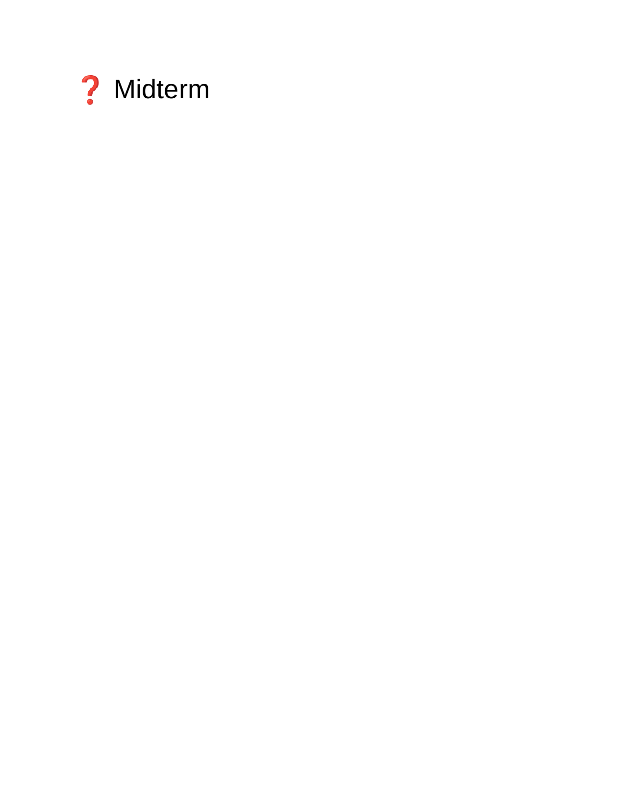
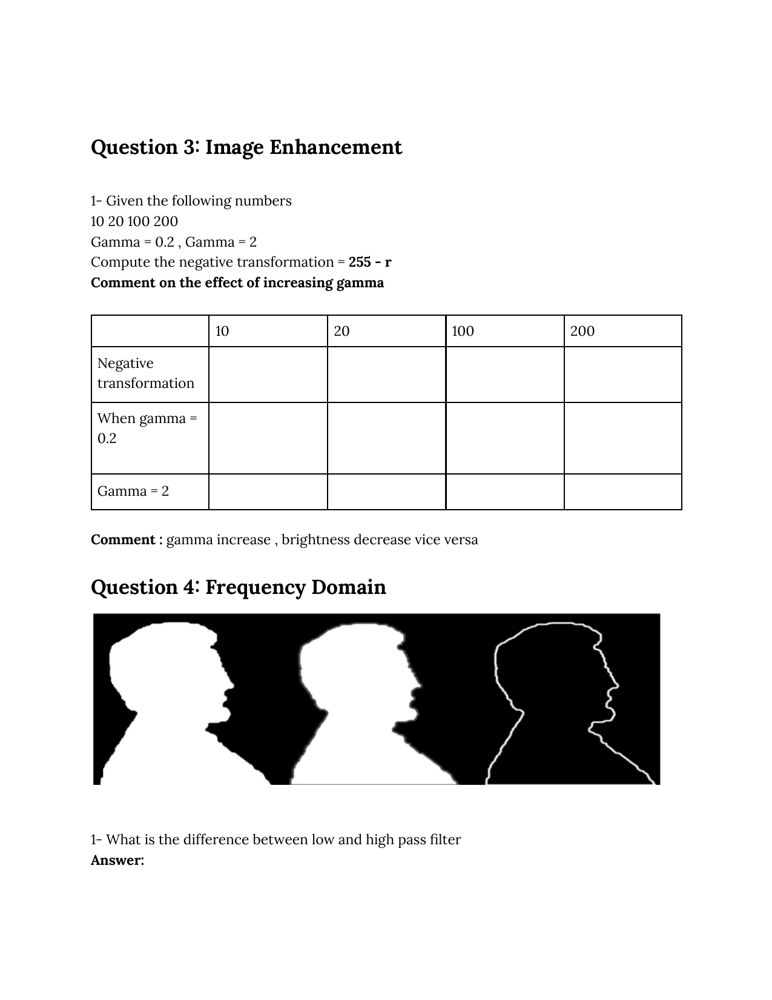
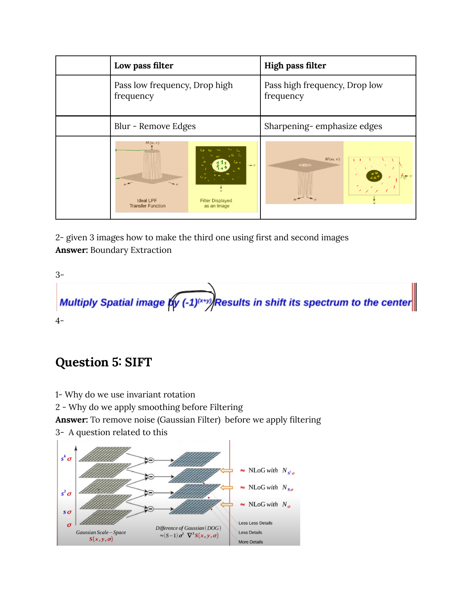
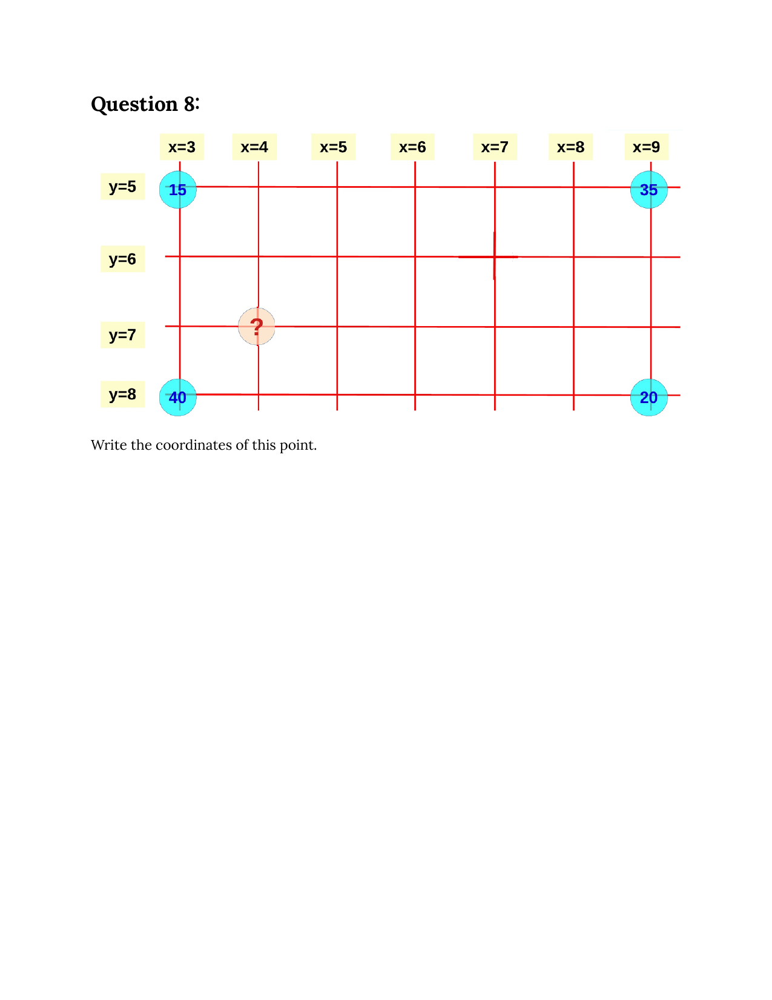

Spring 2025 — Midterm & Final, Fully Solved
Every question from last year's actual exam, with worked solutions linked back to the relevant lecture.
📝 Midterm — Spring 2025
Question 1 — Image Enhancement (identify the masks)
Identify what each 3×3 mask does when convolved with an image.
Matrix 1
| 0 | −1 | 0 |
| −1 | 4 | −1 |
| 0 | −1 | 0 |
Matrix 2
| 0 | −1 | 0 |
| −1 | 5 | −1 |
| 0 | −1 | 0 |
Matrix 1 = Laplacian (4-neighbour) → edge detection. Its centre is $+4$ and its four cardinal neighbours are $-1$ each; the kernel implements $\nabla^2 f = f(x+1,y)+f(x-1,y)+f(x,y+1)+f(x,y-1)-4f(x,y)$ in the form $-\nabla^2$. Output is large in magnitude only at intensity transitions → it detects edges.
Matrix 2 = Composite sharpening mask → edge enhancement (keeps shapes). It is the sum of the identity mask (centre = 1) and Matrix 1 (centre = 4), so centre = 5. Equivalent operation: $g = f + (-\nabla^2 f)$, i.e. original + Laplacian = sharpened image. Detects edges and keeps the original shapes/intensities — hence "detects edges and shapes".
Course reference: L01 — Sharpening filters.
Question 2 — Median filter (3×3, no padding) on a 5×5
Input image:
| 23 | 30 | 40 | 10 | 15 |
| 21 | 32 | 50 | 10 | 22 |
| 34 | 50 | 30 | 40 | 12 |
| 15 | 30 | 20 | 10 | 10 |
| 25 | 70 | 39 | 32 | 20 |
With no padding, only the 3×3 interior positions get an output. For every interior centre, take the 9 values in the 3×3 window, sort them, and pick the median (5th value).
(1,1) centre = 32: window 23,30,40 / 21,32,50 / 34,50,30 → sorted 21,23,30,30,32,34,40,50,50 → median 32.
(1,2) centre = 50: 30,40,10 / 32,50,10 / 50,30,40 → 10,10,30,30,32,40,40,50,50 → 32.
(1,3) centre = 10: 40,10,15 / 50,10,22 / 30,40,12 → 10,10,12,15,22,30,40,40,50 → 22.
(2,1) centre = 50: 21,32,50 / 34,50,30 / 15,30,20 → 15,20,21,30,30,32,34,50,50 → 30.
(2,2) centre = 30: 32,50,10 / 50,30,40 / 30,20,10 → 10,10,20,30,30,32,40,50,50 → 30.
(2,3) centre = 40: 50,10,22 / 30,40,12 / 20,10,10 → 10,10,10,12,20,22,30,40,50 → 20.
(3,1) centre = 30: 34,50,30 / 15,30,20 / 25,70,39 → 15,20,25,30,30,34,39,50,70 → 30.
(3,2) centre = 20: 50,30,40 / 30,20,10 / 70,39,32 → 10,20,30,30,32,39,40,50,70 → 32.
(3,3) centre = 10: 30,40,12 / 20,10,10 / 39,32,20 → 10,10,12,20,20,30,32,39,40 → 20.
Output (3×3):
| 32 | 32 | 22 |
| 30 | 30 | 20 |
| 30 | 32 | 20 |
Course reference: L01 — Order-statistics filters. Notice how the 50/70 spikes were crushed without smearing the rest.
Question 3 — Negative + Gamma on pixel values 10, 20, 100, 200
Compute the negative transform $s=255-r$ and the gamma transform $s = 255\,(r/255)^{\gamma}$ for $\gamma = 0.2$ and $\gamma = 2$. Comment on the effect of increasing γ.
| r = 10 | r = 20 | r = 100 | r = 200 | |
| Negative (255 − r) | 245 | 235 | 155 | 55 |
| γ = 0.2 → s = 255·(r/255)0.2 | ≈ 133 | ≈ 153 | ≈ 211 | ≈ 243 |
| γ = 2 → s = 255·(r/255)2 | ≈ 0.4 | ≈ 1.6 | ≈ 39.2 | ≈ 156.9 |
Sample working (r = 100, γ = 0.2): $s = 255\cdot(100/255)^{0.2}$. $r/255 = 0.392$; $0.392^{0.2}$ — take logs: $0.2\ln 0.392 = -0.187$, $e^{-0.187}=0.829$; $s = 255\cdot 0.829 \approx 211$.
Comment. Increasing γ makes the image darker: $s = (r/255)^{\gamma}$ pulls values toward 0 when γ > 1 because $(r/255) \le 1$. Conversely γ < 1 brightens. Notice the column $r=10$: γ=0.2 lifts it to 133 (much brighter); γ=2 pushes it to 0.4 (essentially black). So the answer key's note — "γ increase → brightness decrease" — is correct.
Course reference: L01 — Gamma correction & Negative transformation.
Question 4 — Frequency Domain
(1) Difference between low-pass filter and high-pass filter.
| Low-pass (LPF) | High-pass (HPF) | |
| What passes | Low frequencies (smooth regions, big shapes) | High frequencies (edges, fine detail) |
| What's dropped | High frequencies | Low frequencies (DC, slow gradients) |
| Effect on image | Blur / smoothing / noise reduction | Sharpening / edge emphasis |
| $H(u,v)$ (ideal) | $1$ if $D(u,v)\le D_0$ else $0$ | $1 - H_\text{LPF}(u,v)$ |
Course reference: L02 — LPF / HPF / BPF. The exam paper showed the LPF surface plot (a flat-topped cylinder) and the HPF complementary surface.
(2) "Given three images, how do you make the third one using the first two?" The third image was an outline of the silhouettes.
This is the boundary extraction operation from morphology:
$$\beta(A) = A - (A \ominus B)$$
i.e. the original image minus its erosion. The result is the one-pixel-thick contour (foreground boundary). The exam's third image is literally $A - \text{erosion}(A)$.
Course reference: L03 — Hit-or-miss & derivatives (boundary).
(3) Multiplying the spatial image by $(-1)^{x+y}$ results in…
Shifting the Fourier spectrum to the centre. Formally, if $g(x,y)=f(x,y)\cdot(-1)^{x+y}$, then $G(u,v) = F(u-M/2,\,v-N/2)$. This is the classical "fftshift" trick used to centre the DC term so you can visualise the spectrum.
Course reference: L02 — 2D DFT (centring property).
Question 5 — SIFT
(1) Why do we use rotation invariance?
So that the same physical feature/object produces the same descriptor regardless of the camera's roll. Without rotation invariance, a rotated copy of an object would not match its template — you would need a separate template at every angle. SIFT achieves it by assigning each keypoint a canonical orientation (the dominant gradient direction in a Gaussian-weighted window) and then computing the descriptor in coordinates rotated to that orientation.
Course reference: L04 — Orientation assignment.
(2) Why do we apply smoothing before filtering (e.g. before computing derivatives)?
To remove noise — usually with a Gaussian filter — before the derivative step amplifies it. Differentiation amplifies high-frequency content, and noise is high frequency. Combining Gaussian smoothing with the Laplacian gives the LoG operator — exactly what DoG approximates.
Course reference: L04 — Scale space + DoG.
(3) Question on the Gaussian scale-space figure (DoG ≈ NLoG at three scales).
The figure shows a Gaussian scale-space $S(x,y,\sigma)$ — the same image blurred with $\sigma,\; s\sigma,\; s^2\sigma,\; s^3\sigma,\;\dots$. Adjacent differences are the Difference-of-Gaussians (DoG), which approximates the scale-normalised Laplacian:
$$\text{DoG}(x,y,\sigma) \approx (s-1)\,\sigma^2\,\nabla^2 S(x,y,\sigma)$$
Each DoG band corresponds to a specific scale ($N_{\sigma}$, $N_{s\sigma}$, $N_{s^2\sigma}$). Keypoints are extrema across both spatial neighbours and the two adjacent scale levels (26-neighbour comparison).
Course reference: L04 — Scale space + DoG and L04 — Keypoint localisation.
📝 Final — Spring 2025
Question 1 — FCN vs Mask R-CNN
| FCN | Mask R-CNN | |
| Type | Semantic segmentation — labels every pixel with a class, but does not distinguish between two cars (both pixels are just "car") | Instance segmentation — produces a separate binary mask per detected object, so two cars get two masks |
| Output structure | One H×W×C tensor, where C = number of classes; each pixel has a class score | For each RoI: (class label, refined box, K×m×m mask tensor). Only the GT-class mask channel is read at inference |
| Output-layer function | Softmax over classes, per pixel (mutually exclusive) | Sigmoid per pixel of each class channel (mask is independent of class; classification head separately decides which channel is "this object") |
Course reference: L12 — Mask R-CNN.
Question 2 — YOLO v2+ loss function (three terms)
| Loss name | Loss function |
| Localisation (box regression) | $\displaystyle L_\text{loc} = \sum_{i,j} \mathbb{1}_{ij}^{obj}\Big[(t_x - \hat t_x)^2 + (t_y - \hat t_y)^2 + (t_w - \hat t_w)^2 + (t_h - \hat t_h)^2\Big]$ — on the parameterised offsets, MSE or Smooth-L1 in newer versions |
| Objectness / Confidence | $\displaystyle L_\text{obj} = -\sum_{i,j}\Big[\mathbb{1}_{ij}^{obj}\,\log\hat C_{ij} + \lambda_\text{noobj}\,\mathbb{1}_{ij}^{noobj}\log(1-\hat C_{ij})\Big]$ — binary CE on the objectness logit, with $\hat C_{ij}$ trained to predict IoU with GT |
| Classification | $\displaystyle L_\text{cls} = -\sum_{i,j}\mathbb{1}_{ij}^{obj}\sum_{c}\big[y_c\log\hat p_c + (1-y_c)\log(1-\hat p_c)\big]$ — independent binary CE per class in YOLO v3+ (so multi-label is possible), softmax CE in v1/v2 |
The total loss is the sum: $L = \lambda_\text{coord}\,L_\text{loc} + L_\text{obj} + L_\text{cls}$. Indicator $\mathbb{1}_{ij}^{obj}$ is 1 only for the "responsible" cell/anchor.
Course reference: L08 — Localisation + Confidence + Class losses, L08 — YOLO versions evolution.
Question 3 — GIoU vs IoU vs DIoU
1. Advantage of GIoU over IoU?
IoU gives no gradient signal when the predicted and ground-truth boxes do not overlap — $\mathrm{IoU} = 0$ for all such cases, so the loss is constant and the gradient is zero. GIoU fixes this with a penalty for the smallest enclosing box $C$:
$$\mathrm{GIoU} = \mathrm{IoU} - \frac{|C \setminus (A \cup B)|}{|C|}$$
The second term is non-zero whenever the boxes are far apart, so the loss pulls the boxes towards each other even when they do not overlap.
Course reference: L06 — IoU + IoU loss.
2. Advantage of DIoU over GIoU?
GIoU still converges slowly when the boxes are aligned but have different aspect ratios — the enclosing-box penalty can plateau. DIoU adds a direct penalty for the distance between the box centres:
$$\mathrm{DIoU} = \mathrm{IoU} - \frac{\rho^2(b, b^{gt})}{c^2}$$
with $\rho$ = Euclidean distance between centres and $c$ = diagonal of the smallest enclosing box. This gives a much stronger gradient pulling centres together → faster convergence and better localisation, especially for small-IoU cases.
Question 4 — R-CNN family & IoU loss
1. Give 2 reasons why Fast R-CNN is faster than R-CNN.
- Single CNN pass. R-CNN warps and re-runs the CNN backbone on each of ~2000 region proposals (≈ 2000× redundant work on overlapping patches). Fast R-CNN runs the backbone once on the whole image and reuses the feature map; the per-proposal cost drops to a small RoI Pool + tiny FC head.
- Single end-to-end network with multi-task loss. R-CNN trains three stages separately (CNN finetune → per-class SVMs → bbox regressors). Fast R-CNN replaces SVMs/regressors with a single softmax + Smooth-L1 head and trains them jointly with one loss — no disk caching of features between stages, much shorter training.
Course reference: L09 — Fast R-CNN.
2. Why do we use $1 - \mathrm{IoU}$ instead of IoU?
Because training minimises the loss. $\mathrm{IoU}=1$ means a perfect prediction — that's the value we want to maximise. Subtracting from 1 flips it into a loss whose minimum (0) corresponds to a perfect overlap; lower = better, which is the convention every optimiser expects.
Course reference: L06 — IoU loss.
Question 5 — RPN counts (500×600 image, 10×10 cells, 3 ratios, 4 scales)
Number of anchor points = $\frac{500}{10}\cdot\frac{600}{10} = 50 \cdot 60 = \boxed{3{,}000}$.
Number of anchor boxes per cell (per anchor point) = $3\times 4 = \boxed{12}$.
Number of total boxes = $3000 \cdot 12 = \boxed{36{,}000}$.
Number of regression vectors = number of anchor boxes = $\boxed{36{,}000}$.
Number of objectness vectors = number of anchor boxes = $\boxed{36{,}000}$.
Number of values in each regression vector = $\boxed{4}$ — namely $(t_x, t_y, t_w, t_h)$.
Number of values in each objectness vector = $\boxed{2}$ if we use the RPN's softmax (object / no-object), or $\boxed{1}$ if we use a single sigmoid logit. Most current implementations use 1.
Output of regression vector — "any number" (real-valued): the predictions $(t_x,t_y)$ are real offsets and $(t_w,t_h) = \log(\cdot)$ are unbounded.
Output of objectness vector — "range (0,1)": it's a probability, produced by a sigmoid (or softmax over two classes).
Course reference: L10 — Anchor points & anchor boxes and RPN heads.
Question 6 — YOLO output-vector size (80 classes, 10 anchors, 15×15 grid)
The output tensor has shape $S\times S\times(\text{values per cell})$. With $S=15$, $N=80$ classes, $M$ active anchors:
(1) Only 1 object per cell. One anchor is enough → 5 box values ($p_c, b_x, b_y, b_w, b_h$) + 80 class probabilities = 85 values per cell. Tensor size $15\times 15\times 85 = 19{,}125$.
(2) Up to 10 objects per cell. Need all 10 anchors. With per-anchor classes (each anchor predicts its own class distribution), per-cell length = $10\cdot(5+80) = \boxed{850}$, tensor $15\times 15\times 850 = 191{,}250$.
If instead class probabilities are shared across all anchors of a cell (the YOLO v1 convention), per-cell length = $M\cdot 5 + N = 10\cdot 5 + 80 = \boxed{130}$, tensor $15\times 15\times 130 = 29{,}250$. Comment: per-anchor classes use more parameters but let a single cell predict objects of different classes; shared classes are cheaper but force every anchor in a cell to commit to the same class — that's why YOLO v2+ moved to per-anchor.
Course reference: L07 — Output tensor.
Question 7 — Choosing the correct number of anchor boxes (k-means)
- Run k-means clustering on the ground-truth bounding-box dimensions $(w,h)$ from the training set, for $K = 3, 4, 5, \dots$. Use $1 - \mathrm{IoU}$ as the distance instead of Euclidean (so big and small boxes can sit in the same cluster).
- For each $K$: assign every GT box to its nearest cluster centroid (the cluster represents one anchor). Compute the mean IoU between every GT box and its assigned anchor.
- Repeat for increasing $K$ — mean IoU rises monotonically.
- Plot mean IoU vs $K$; pick the smallest $K$ whose mean IoU exceeds an acceptable threshold (typically ≥ 0.6). This is the classic elbow trade-off: more anchors → more parameters, slower inference; fewer anchors → looser fits.
The K-means anchor selection is exactly the procedure introduced in YOLO v2 ("Dimension Clusters").
Course reference: L08 — YOLO versions evolution and L10 — Anchor boxes.
Question 8 — Bilinear interpolation
The four corner values on the grid are $f(3,5)=15$, $f(9,5)=35$, $f(3,8)=40$, $f(9,8)=20$. Find the value of the point at $(x,y) = (4, 7)$.
Bilinear interpolation between the four corners with normalised offsets
$$a = \frac{x - x_1}{x_2 - x_1} = \frac{4-3}{9-3} = \frac{1}{6},\qquad b = \frac{y - y_1}{y_2 - y_1} = \frac{7-5}{8-5} = \frac{2}{3}$$
$$f(x,y) = (1-a)(1-b)f(3,5) + a(1-b)f(9,5) + (1-a)b\,f(3,8) + a\,b\,f(9,8)$$
$= \tfrac{5}{6}\cdot\tfrac{1}{3}\cdot 15 \;+\; \tfrac{1}{6}\cdot\tfrac{1}{3}\cdot 35 \;+\; \tfrac{5}{6}\cdot\tfrac{2}{3}\cdot 40 \;+\; \tfrac{1}{6}\cdot\tfrac{2}{3}\cdot 20$
$= \tfrac{75}{18} + \tfrac{35}{18} + \tfrac{400}{18} + \tfrac{40}{18} = \tfrac{550}{18} \approx \boxed{30.56}$
Course reference: L11 — RoI Align (bilinear interpolation).
📄 Original exam pages
The exact PDF the questions were lifted from, for visual reference.



